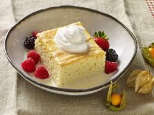

Uno Leches Cake
Home
Brisket
Soy Sauce Eggs

This recipe will teach you how to make an "Uno Leches cake," a take on the popular "Tres Leches" dish.
Ingredients
- flour
- eggs
- milk
- baking powder
- vanilla extract
- butter
- mix dry ingredients
- mix wet ingredients in
- bake cake at 350 for about 30 mins
- soak in milk
- let sit in refrigerator overnight
- enjoy!